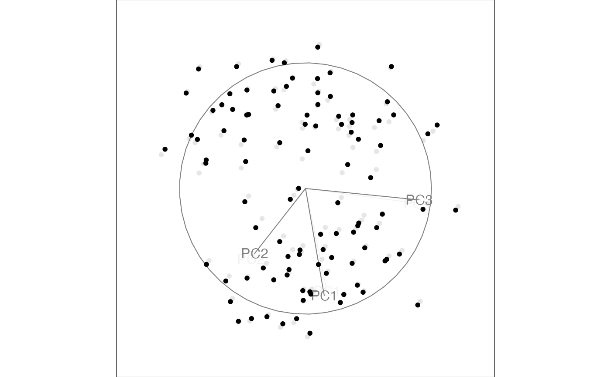
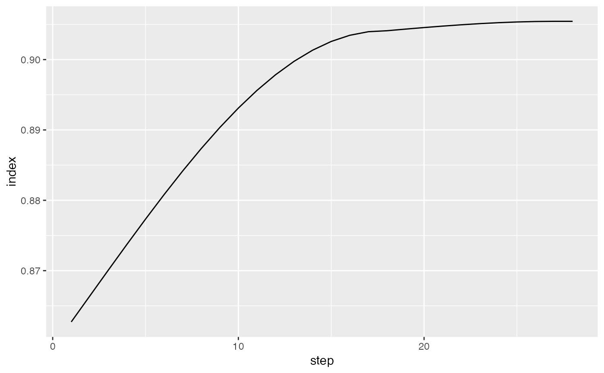

Save a tour path so it can later be displayed in many different ways.
save_history( data, tour_path = grand_tour(), max_bases = 100, start = NULL, rescale = TRUE, sphere = FALSE, step_size = Inf, ... )
Arguments
| data | matrix, or data frame containing numeric columns |
|---|---|
| tour_path | tour path generator |
| max_bases | maximum number of new bases to generate. Some tour paths (like the guided tour) may generate less than the maximum. |
| start | starting projection, if you want to specify one |
| rescale | if true, rescale all variables to range [0,1]? |
| sphere | if true, sphere all variables |
| step_size | distance between each step - defaults to |
| ... | additional arguments passed to tour path |
References
Hadley Wickham, Dianne Cook, Heike Hofmann, Andreas Buja (2011). tourr: An R Package for Exploring Multivariate Data with Projections. Journal of Statistical Software, 40(2), 1-18. https://www.jstatsoft.org/v40/i02/.
Examples
# You can use a saved history to replay tours with different visualisations t1 <- save_history(flea[, 1:6], max = 3)#>#> target_dist - cur_dist: 0 #> generation: dist = 1.306751 #> target_dist - cur_dist: 1.306751 #> generation: dist = 1.53569 #> target_dist - cur_dist: 0 #> generation: dist = 1.913327 #> target_dist - cur_dist: 0 #> generation: dist = 1.350861#>#> target_dist - cur_dist: 0 #> generation: dist = 1.913327#>#> target_dist - cur_dist: 1.913327## andrews_history(t1) ## andrews_history(interpolate(t1)) t1 <- save_history(flea[, 1:6], grand_tour(4), max = 3)#>#> target_dist - cur_dist: 0 #> generation: dist = 1.506518 #> target_dist - cur_dist: 1.506518 #> generation: dist = 2.229876 #> target_dist - cur_dist: 0 #> generation: dist = 1.571824 #> target_dist - cur_dist: 0 #> generation: dist = 1.600482#>#> target_dist - cur_dist: 0 #> generation: dist = 2.259255#> target_dist - cur_dist: 2.259255#>#> target_dist - cur_dist: 0 #> generation: dist = 2.259255#> target_dist - cur_dist: 2.259255#>#> target_dist - cur_dist: 0 #> generation: dist = 1.398101 #> target_dist - cur_dist: 1.398101 #> generation: dist = 1.394964 #> target_dist - cur_dist: 0 #> generation: dist = 1.124408 #> target_dist - cur_dist: 0 #> generation: dist = 1.304568#>#> target_dist - cur_dist: 0 #> generation: dist = 1.124408#>#> target_dist - cur_dist: 1.124408testdata <- matrix(rnorm(100 * 3), ncol = 3) testdata[1:50, 1] <- testdata[1:50, 1] + 10 testdata <- sphere_data(testdata) t2 <- save_history(testdata, guided_tour(holes(), max.tries = 100), max = 5, rescale = FALSE )#> target_dist - cur_dist: 0 #> Value 0.812 8.2 % better - NEW BASIS #> generation: dist = 0.9954297 #> target_dist - cur_dist: 0.9954297 #> Value 0.817 8.8 % better - NEW BASIS #> generation: dist = 0.9954297 #> target_dist - cur_dist: 0 #> Value 0.894 9.4 % better - NEW BASIS #> generation: dist = 0.9954297 #> target_dist - cur_dist: 0 #> Value 0.912 2.1 % better - NEW BASIS #> generation: dist = 0.4316077 #> target_dist - cur_dist: 0 #> Value 0.912 0.0 % better #> Value 0.912 0.0 % better #> Value 0.912 0.0 % better #> Value 0.912 0.0 % better #> Value 0.912 0.0 % better #> Value 0.912 0.0 % better #> Value 0.912 0.0 % better #> Value 0.912 0.0 % better #> Value 0.912 0.0 % better #> Value 0.912 0.0 % better #> Value 0.912 0.0 % better #> Value 0.912 0.0 % better #> Value 0.912 0.0 % better #> Value 0.912 0.0 % better #> Value 0.912 0.0 % better #> Value 0.912 0.0 % better #> Value 0.912 0.0 % better #> Value 0.912 0.0 % better #> Value 0.912 0.0 % better #> Value 0.912 0.0 % better #> Value 0.912 0.0 % better #> Value 0.912 0.0 % better #> Value 0.912 0.0 % better #> Value 0.912 0.0 % better #> Value 0.912 0.0 % better #> Value 0.912 0.0 % better #> Value 0.912 0.0 % better #> Value 0.912 0.0 % better #> Value 0.912 0.0 % better #> Value 0.912 0.0 % better #> Value 0.912 0.0 % better #> Value 0.912 0.0 % better #> Value 0.912 0.0 % better #> Value 0.912 0.0 % better #> Value 0.912 0.0 % better #> Value 0.912 0.0 % better #> Value 0.912 0.0 % better #> Value 0.912 0.0 % better #> Value 0.912 0.0 % better #> Value 0.912 0.0 % better #> Value 0.912 0.0 % better #> Value 0.912 0.0 % better #> Value 0.912 0.0 % better #> Value 0.912 0.0 % better #> Value 0.912 0.0 % better #> Value 0.912 0.0 % better #> Value 0.912 0.0 % better #> Value 0.912 0.0 % better #> Value 0.912 0.0 % better #> Value 0.912 0.0 % better #> Value 0.912 0.0 % better #> Value 0.912 0.0 % better #> Value 0.912 0.0 % better #> Value 0.912 0.0 % better #> Value 0.912 0.0 % better #> Value 0.912 0.0 % better #> Value 0.912 0.0 % better #> Value 0.912 0.0 % better #> Value 0.912 0.0 % better #> Value 0.912 0.0 % better #> Value 0.912 0.0 % better #> Value 0.912 0.0 % better #> Value 0.912 0.0 % better #> Value 0.912 0.0 % better #> Value 0.912 0.0 % better #> Value 0.912 0.0 % better #> Value 0.912 0.0 % better #> Value 0.912 0.0 % better #> Value 0.912 0.0 % better #> Value 0.912 0.0 % better #> Value 0.912 0.0 % better #> Value 0.912 0.0 % better #> Value 0.912 0.0 % better #> Value 0.912 0.0 % better #> Value 0.912 0.0 % better #> Value 0.912 0.0 % better #> Value 0.912 0.0 % better #> Value 0.912 0.0 % better #> Value 0.912 0.0 % better #> Value 0.912 0.0 % better #> Value 0.912 0.0 % better #> Value 0.912 0.0 % better #> Value 0.912 0.0 % better #> Value 0.912 0.0 % better #> Value 0.912 0.0 % better #> Value 0.912 0.0 % better #> Value 0.912 0.0 % better #> Value 0.912 0.0 % better #> Value 0.912 0.0 % better #> Value 0.912 0.0 % better #> Value 0.912 0.0 % better #> Value 0.912 0.0 % better #> Value 0.912 0.0 % better #> Value 0.912 0.0 % better #> Value 0.912 0.0 % better #> Value 0.912 0.0 % better #> Value 0.912 0.0 % better #> Value 0.912 0.0 % better #> Value 0.912 0.0 % better #> No better bases found after 100 tries. Giving up. #> Final projection: #> -0.586 -0.804 #> 0.406 -0.398 #> 0.701 -0.442#> target_dist - cur_dist: 0 #> generation: dist = 0.9954297#>#> target_dist - cur_dist: 0.9954297# Or you can use saved histories to visualise the path that the tour took. plot(path_index(interpolate(t2), holes()))#> target_dist - cur_dist: 0 #> generation: dist = 0.9954297 #> target_dist - cur_dist: 0.9954297 #> target_dist - cur_dist: 0.9454297 #> target_dist - cur_dist: 0.8954297 #> target_dist - cur_dist: 0.8454297 #> target_dist - cur_dist: 0.7954297 #> target_dist - cur_dist: 0.7454297 #> target_dist - cur_dist: 0.6954297 #> target_dist - cur_dist: 0.6454297 #> target_dist - cur_dist: 0.5954297 #> target_dist - cur_dist: 0.5454297 #> target_dist - cur_dist: 0.4954297 #> target_dist - cur_dist: 0.4454297 #> target_dist - cur_dist: 0.3954297 #> target_dist - cur_dist: 0.3454297 #> target_dist - cur_dist: 0.2954297 #> target_dist - cur_dist: 0.2454297 #> target_dist - cur_dist: 0.1954297 #> target_dist - cur_dist: 0.1454297 #> target_dist - cur_dist: 0.09542971 #> target_dist - cur_dist: 0.04542971 #> generation: dist = 0.4316077 #> target_dist - cur_dist: 0.4316077 #> target_dist - cur_dist: 0.3816077 #> target_dist - cur_dist: 0.3316077 #> target_dist - cur_dist: 0.2816077 #> target_dist - cur_dist: 0.2316077 #> target_dist - cur_dist: 0.1816077 #> target_dist - cur_dist: 0.1316077 #> target_dist - cur_dist: 0.0816077 #> target_dist - cur_dist: 0.0316077#> target_dist - cur_dist: 0 #> generation: dist = 0.9954297 #> target_dist - cur_dist: 0.9954297 #> target_dist - cur_dist: 0.9454297 #> target_dist - cur_dist: 0.8954297 #> target_dist - cur_dist: 0.8454297 #> target_dist - cur_dist: 0.7954297 #> target_dist - cur_dist: 0.7454297 #> target_dist - cur_dist: 0.6954297 #> target_dist - cur_dist: 0.6454297 #> target_dist - cur_dist: 0.5954297 #> target_dist - cur_dist: 0.5454297 #> target_dist - cur_dist: 0.4954297 #> target_dist - cur_dist: 0.4454297 #> target_dist - cur_dist: 0.3954297 #> target_dist - cur_dist: 0.3454297 #> target_dist - cur_dist: 0.2954297 #> target_dist - cur_dist: 0.2454297 #> target_dist - cur_dist: 0.1954297 #> target_dist - cur_dist: 0.1454297 #> target_dist - cur_dist: 0.09542971 #> target_dist - cur_dist: 0.04542971 #> generation: dist = 0.4316077 #> target_dist - cur_dist: 0.4316077 #> target_dist - cur_dist: 0.3816077 #> target_dist - cur_dist: 0.3316077 #> target_dist - cur_dist: 0.2816077 #> target_dist - cur_dist: 0.2316077 #> target_dist - cur_dist: 0.1816077 #> target_dist - cur_dist: 0.1316077 #> target_dist - cur_dist: 0.0816077 #> target_dist - cur_dist: 0.0316077